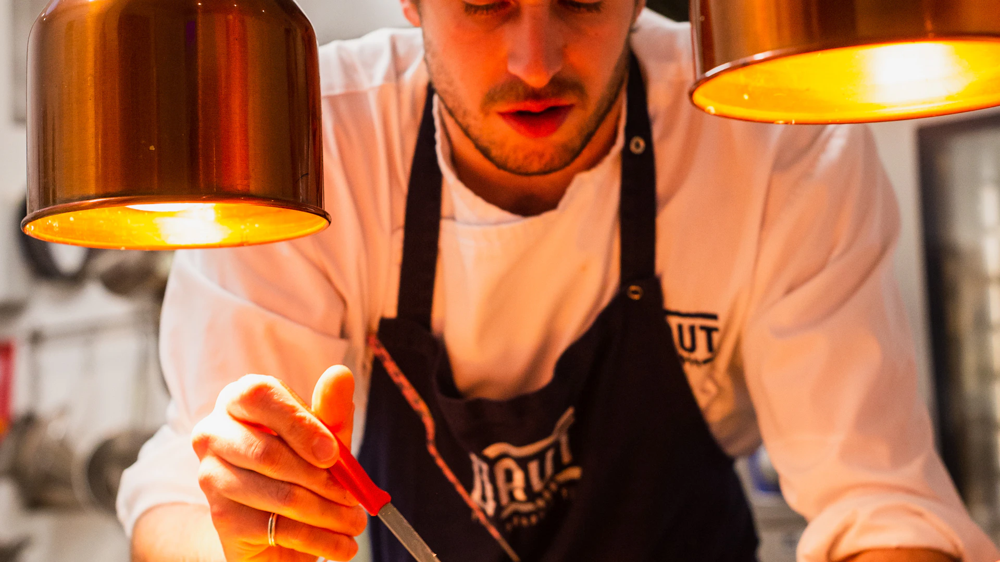
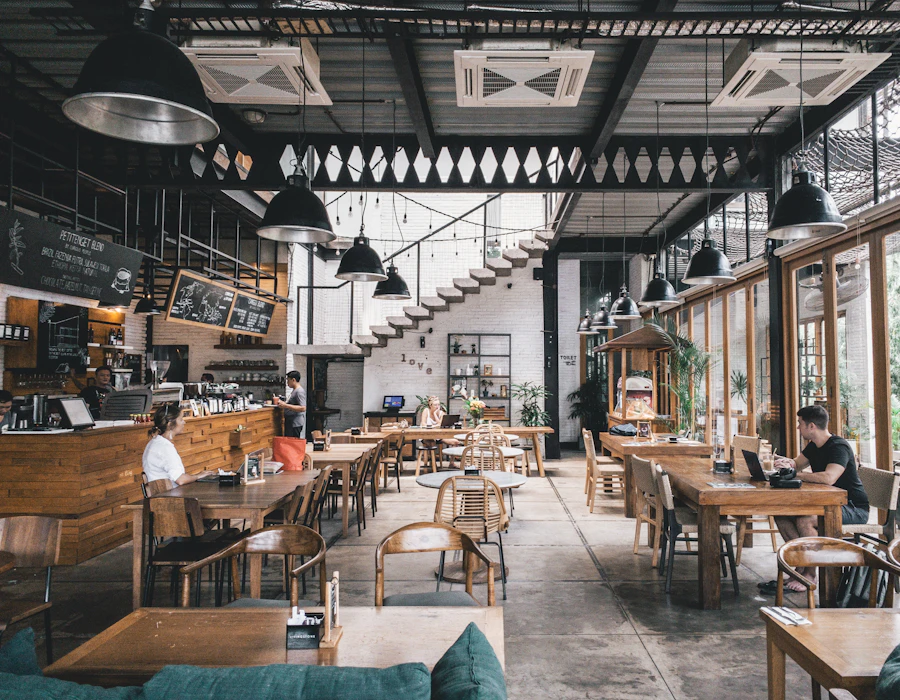
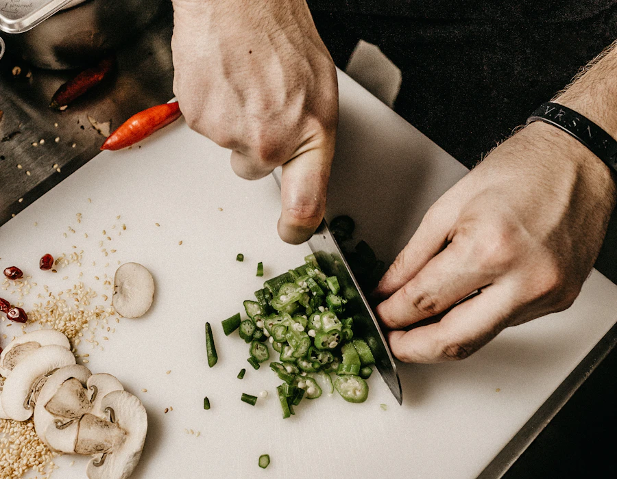
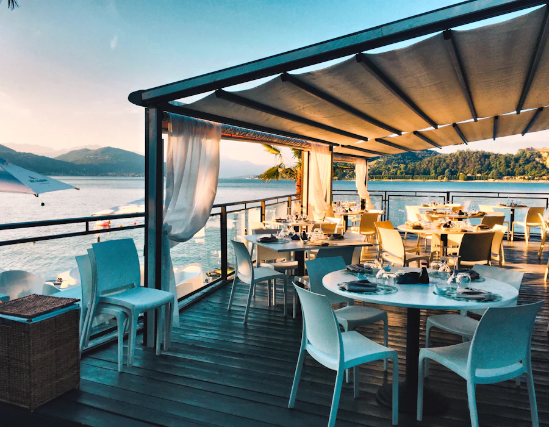

Built on family recipes and a few kept secrets
Every dish on our menu started in someone's home kitchen before it ever reached a restaurant table.

A love letter to Filipino home cooking
Recipe Secrets opened with a simple idea: the best Filipino food isn't hiding in formality, it's hiding in family recipe boxes, in notes scribbled by grandmothers, in the dishes that taste like a specific person's kitchen.
We started collecting those recipes — some from our own families, some shared by regulars who trusted us with them — and began reworking them just enough to fit a modern table, without losing the soul of the original.

A kitchen that cooks like it's for family
Our kitchen is led by a small team of cooks who grew up on the dishes they now serve. Everything is made in-house, in small batches, the way it would be made for a dinner with people you love.
No shortcuts, no pre-made sauces, nothing frozen that doesn't need to be — just a kitchen that treats every plate the way it would treat a plate for its own family.

Honest food, generously served
We believe good food doesn't need to be complicated to be special. Our plates are built around clear, bold flavors — sour, salty, sweet, and smoky — balanced the way they are in a Filipino home, then presented with the kind of care you'd expect from a night out.
Every table at Recipe Secrets should leave a little fuller, a little happier, and already planning their next visit.